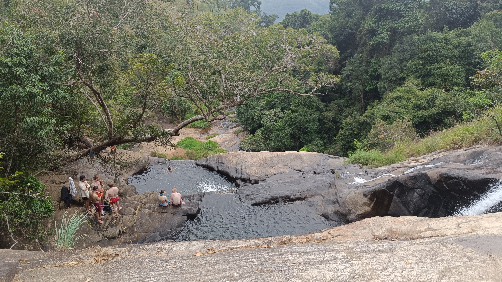
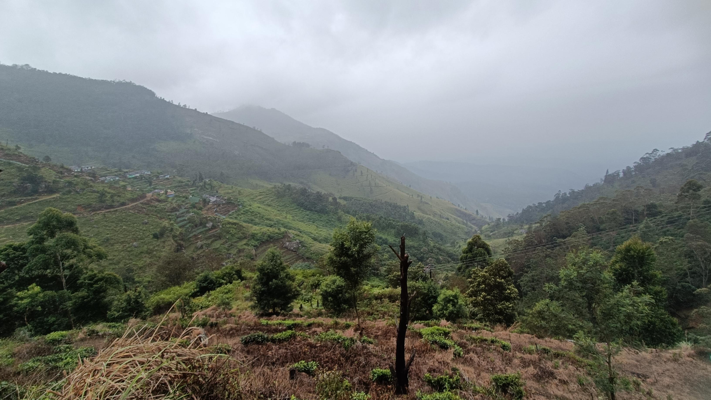
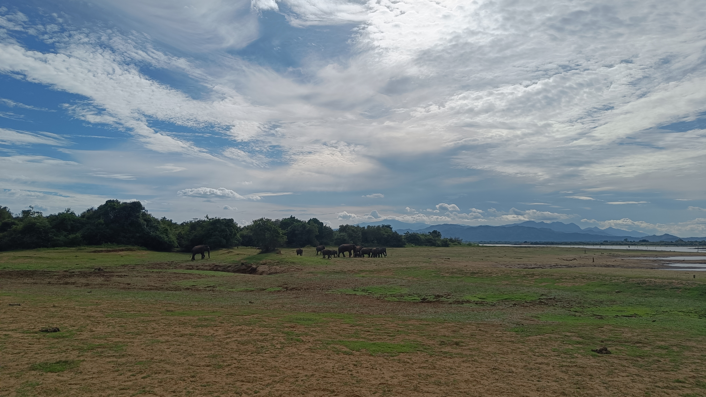

Meie loodusreisikese sihtkohad olid teada juba paar kuud tagasi. Kõige kokkusidumine ja reaalseks plaaniks saamine oli aga pidevas muutumises. Kui siis esmaspäeva hommikul kell 8 oma kokkupakitud asjade otsas autot ootasime, ei teadnud me veel, millised plaanid olid meiega aga universumil.
Jooksvalt täienev reisikiri (6)
Kosk. Matk. Safari.
Auto ja juht, kellega olime veel eelmise päeva õhtul kogu plaani kooskõlastanud, annab teada kell 8 hommikul, mil pidime startima, et tema autol on mingi kliimaseadme probleem (udu esiklaasil) ja sellisega mägedesse minna ei saa. Küll aga tuleb üks teine auto, no problem. 15 minutit hiljem antakse meile teada, et see uus auto sattus liiklusõnnetusse… Hakkan tõsiselt kahtlema, kas meile mitte ei öelda kõrgemalt poolt STOP, ärge pigem minge. Jõuan seda juba ka juhile väljendada kui saabub info, et tulemas on kolmas auto! Ohh, noo… okei! Olime vaadanud reisi planeerides kuupäevi siia- ja sinnapoole ja tõdenud, et praegu on just tervise, töö ja meie saarelt lahkumise kuupäeva arvestades see kõige parem aeg kaua plaanitud loodusretk teoks teha.
Kolmas auto jõudis kohale kell 9. Segaste tunnete saatel alustasime teekonda, aga juba Galles sõitis autojuht esimesest õigest teest mööda, mille peale Toomas kommenteeris, et tema oleks tänasel päeval juba ka ise teadnud, kuhu pöörata. Hiljem samal õhtul sõitsime lausa 10 minutit vales suunas ja oleks ilmselt rahulikult kauemgi sõitnud, kui ma poleks tagapingil teed jälginud, tal peatuda palunud, et ta oma sõidusuunda kontrolliks.
Järgmine imelik hetk sel esimesel hommikul oligi autos temaga vesteldes, kui ma sain aru, et ta reaalselt ei saa aru. Ma siis toksisin talle Google Translate’i sõbraliku teksti, kus meie plaani uuesti lahti kirjutasin, lasin selle singali keelde tõlkida. Sest ta hakkas meile pakkuma välja mingit uut plaani, uusi majutuskohti jne. Hiljem veendusimegi, et tal olid meiega seotud omad lootused ja oma agenda. Teise teksti kirjutasin talle guugli abiga pärast seda, kui ta otsustas meiega kooskõlastamata peatuda ja endale hommikusööki tellida… ja siis ootas, et me selle ka kinni maksaksime 😊 Ok, oleme mõistvad, tal ju ootamatu hommik ja ta ei pruugi lõpuni teada, millised kokkulepped oleme teinud algse juhiga (st, et kõik on tema jaoks päevatasu sees)...
Kokkuvõtlikult tuleb tõdeda, et kortisooli tase tõusis tema tõttu küll. Siinne liiklus on piisavalt tihe, kiire ja kaootiline, rääkimata mägede kitsastest ja käänulistest teedest kuristiku serval, et võiks eeldada kohalolekut, kahte kätt roolil ja navigeerimisseadme jälgimise oskust. Muidu oleks võinud ju ise auto rentida, ent kindluse mõttes ja ärevuse vähendamise nimel leidsime kohaliku reisikorraldaja, keda väideti olevat usaldusväärne ja tuuride korraldamisel kogenud inimene. Kolmandal päeval selguski, et selline juhtide asendamine oli käinud põhimehe selja taga ja oli tema hinnangul absoluutselt vale. Ta oli sellest kõigest väga häiritud ja mures, kas meiega on ikka kõik hästi. Hästi oligi ehk mh seetõttu, et kui peale mitmeid palveid juhile seoses tema lõppematute telefonikõnede ja ühe käega roolimise lõpetamiseks vedu ei võtnud, siis sundisime ta 10 minutit peale sõidu alustamist peatuma ja kordasime veelkord üle oma ootused, seekord juba üsna nõudliku tooniga. Me Toomasega oleme siiski mõlemad pikaaegsed (poiss)laste vanemad, eks… 😊
Tegelikult oli asi naljast kaugel, ja samas olime ka (loodetavasti) katastroofist piisavalt kaugel. Aga usaldust ei olnud ja pinge püsis autosõidu ajal sees ehk “not ideal”.
SAMAS! Me oleme tõesti väga tänulikud ja õnnelikud, et meil avanes siiski võimalus kogeda Sri Lanka looduse mitmekülgsust ja võimsust. Ja selle kogemuse võrra rikkama ja targemana annaksin mõnele siinsele reisikorraldajale ilmselt ka uue võimaluse.
Diyaluma kose looduslikud basseinid eri tasanditel, milles kümblesime suure mõnuga. Ja närvikõdi taas nii kõrge(te) kukkumis(t)e läheduses viibimisest.

Diyaluma kose looduslikud basseinidDevil’s Staircase nimeline matkarada, mis kulges mööda mäekülgi ja teeistandusi. Seda oleks saanud läbida lühema või pikema ringiga. Meil oli terve (vihmane!) päev aega ja valisime kõndida 16 km, mis möödus peamiselt laskudes. Vihmas, udus, vaikuses. Superluks, et mu põlved vastu pidasid, aga Haputale linna jõudes peatusime igatahes ajurveeda poes, et osta nii “coldrexi” kui lihasvalu leevendavat õli.

Devil's staircasePealelõunane safari Udawalawe rahvuspargis, kus nägime mitmeid elevantide karjasid! Muid loomi ka (küll mitte leopardi), aga elevandid oma rikkalikus esindatuses võitsid ikkagi mu südame. Meie safari giid-autojuht oli tasemel!

Uhke elevandikari
📷 Saagu seekord rohkem sõna pildikeel! Pltidele olen lisanud ka kommentaare, vaata SIIA.
✍️ Kommenteeri või jaga oma mõtteid all!
Kommentaarid